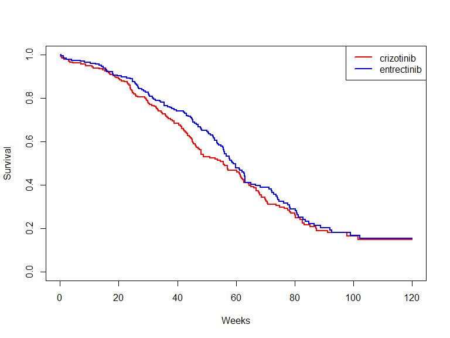
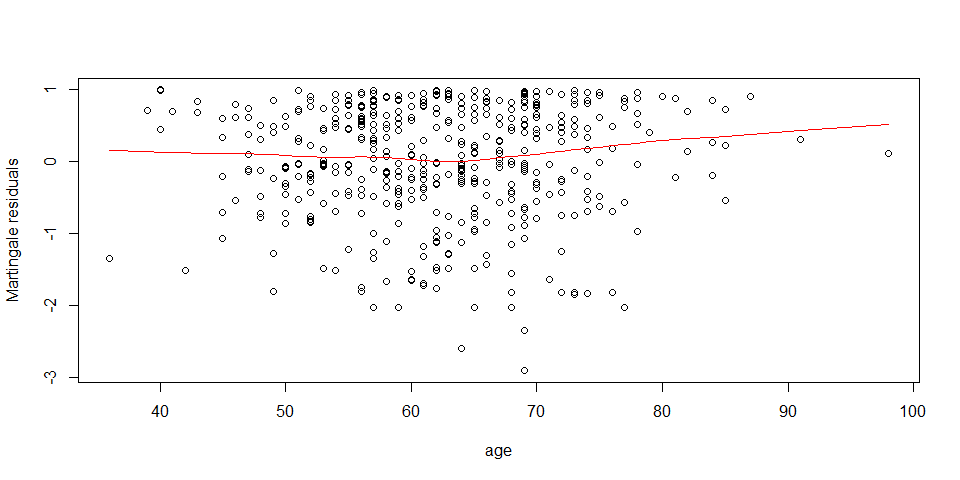
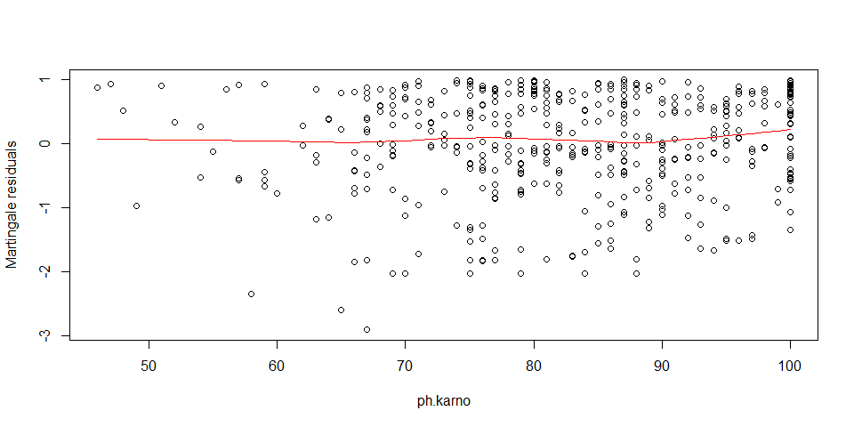
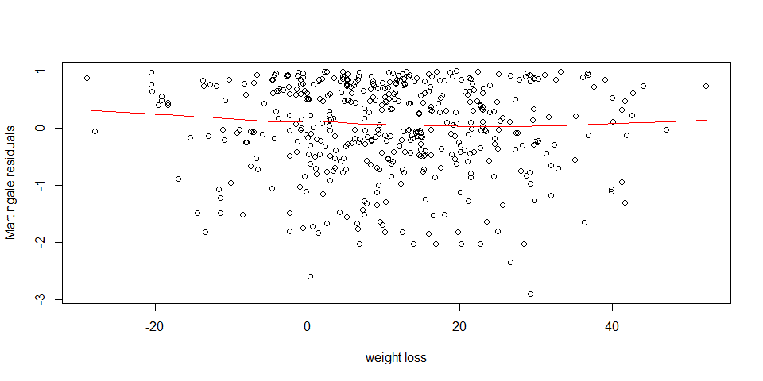
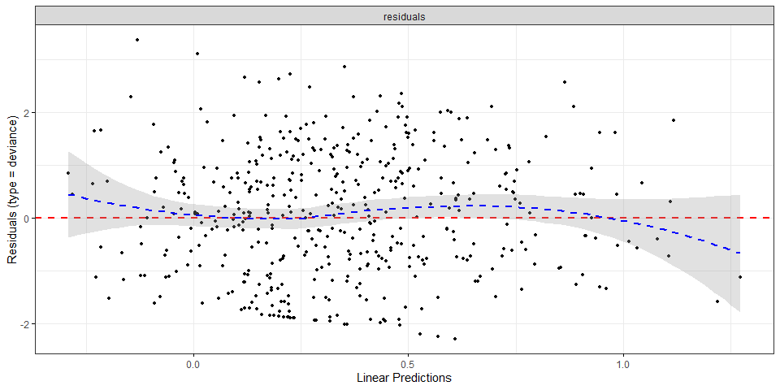

5 Survival Analysis
5.1 Univariate Analysis
Let us start by estimating the survival curve in the two treatment groups for the first imputed dataset:
imputed_1 <- complete(imputed_data,1)
surv_fit <- survfit(Surv(fu, event)~medication, data = imputed_1)
plot(surv_fit, xlim=c(0,120), col=c("red","blue"), lty=1, lwd=2,
xlab="Weeks", ylab="Survival")
legend(x = "topright", # Position
legend = c("Crizotinib", "Entrectinib"), # Legend texts
lty = c(1, 1), # Line types
col = c("red", "blue"), # Line colors
lwd = 2) 
The two curves do not seem substantially different. Let’s now run a Log-rank test to check whether the difference in the two estimated curves is statistically significant:
survdiff(Surv(fu, event)~medication, data = imputed_1)## Call:
## survdiff(formula = Surv(fu, event) ~ medication, data = imputed_1)
##
## N Observed Expected (O-E)^2/E (O-E)^2/V
## medication=crizotinib 231 151 142 0.533 1.04
## medication=entrectinib 232 142 151 0.503 1.04
##
## Chisq= 1 on 1 degrees of freedom, p= 0.3The test suggests that there is not enough evidence to reject the null hypothesis that the two survival curves are not different. Of course, this is a univariate analysis, which does not account for differences in all other covariates between the two treatment groups, and in this analysis we only looked at the first imputed dataset. To account for all covariates and all imputed datasets we fit a Cox Multiple Regression model to each imputed dataset and then pool the statistics obtained.
5.2 Cox Multiple Regression
To assess whether the survival of patients differs in the two treatment groups, we fitted a Cox Regression model for each of the imputed datasets. Let us analyse the pooled statistics for the fitted Cox models:
summary(pool(models), conf.int = TRUE)## term estimate std.error statistic df
## 1 age 0.007112186 0.006997901 1.01633138 282.1335
## 2 sex1 0.001256594 0.120209962 0.01045333 282.5921
## 3 ph.ecog1 0.398998873 0.167500975 2.38206896 277.8997
## 4 ph.ecog2 0.922655472 0.255806244 3.60685282 261.1758
## 5 ph.ecog3 1.677028332 0.514363717 3.26039392 277.7397
## 6 ph.karno 0.019038762 0.008281139 2.29905114 275.9777
## 7 wt.loss -0.004262902 0.004726079 -0.90199554 247.0426
## 8 medicationentrectinib -0.128153604 0.118168728 -1.08449677 282.6867
## p.value 2.5 % 97.5 %
## 1 0.3103423672 -0.006662537 0.020886910
## 2 0.9916669789 -0.235363988 0.237877176
## 3 0.0178886646 0.069266993 0.728730754
## 4 0.0003712572 0.418950326 1.426360618
## 5 0.0012512576 0.664481731 2.689574933
## 6 0.0222491550 0.002736536 0.035340987
## 7 0.3679378027 -0.013571448 0.005045645
## 8 0.2790686390 -0.360755899 0.104448691This suggests that the ECOG score is a statistically significant predictor, due to the rather small p-values (0.001 for ECOG score 3 compared to score 0). Higher ECOG scores correspond to higher hazard rates, with score 3 changing the hazard by a factor of \(5.35=\exp(1.677028332)\) \([95\% \text{ CI } (1.94-14.73)]\), compared to score zero. This result is in accordance with our expectation.
The Karnofsky score also has a small p-value (below 0.05). Higher Karnofsky scores correspond to higher hazard rates, with an increase of one point in the Karnofsky score leading to an increase of \(2\%\) \([95\% \text{ CI } (0.3\%-3.6\%)]\) in the hazard. Since higher Karnofsky scores indicate better health conditions, this result is slightly counterintuitive and deserves further investigation.
Even tough the negative coefficient for Entrectinib with respect to Crizotinib is in accordance with our previous remark that the percentage of deaths is lower in patients treated with Entrectinib, the treatment (Crizotinib vs Entrectinib) was not a statistically significant predictor for the survival of patients (p-value \(0.28\)).
The p-values for all remaining covariates (age, sex, weight loss) also suggest that they are not statistically significant.
5.3 Verifying Assumptions
5.3.1 Proportional Hazards
To check whether the assumption of proportional hazards is satisfied, we use the Schoenfeld residuals:
Schoen <- with(imputed_data,
cox.zph(coxph(Surv(fu, event) ~ age+sex+ph.ecog+ph.karno+wt.loss+medication)) )
p_value <- matrix(0, 20, 6)
for (i in 1:20) {
for (j in 1:6)
p_value[i,j] <- Schoen$analyses[[i]][[1]][j,3]
}
sum(p_value <0.05)## [1] 2The element [i,j] in p_value, contains the p-value for the proportionality assumption for the jth predictor on the ith imputed dataset. We see that almost no element in p-value is below 0.05, suggesting that the proportionality assumption holds for all predictors.
5.3.2 Linearity
To check whether there is a roughly linear relationship between the log-hazard and the continuous covariates, we start by fitting a Cox model without the continuous covariates. We use the first imputed dataset for this analysis:
cox_categ <- coxph(Surv(fu, event) ~ sex+ph.ecog+medication, data = imputed_1)We then plot the Martingale residuals of such model against the three continuous covariates:
plot(imputed_1$age, residuals(cox_categ), xlab = "age", ylab = "Martingale residuals")
lines(lowess(imputed_1$age, residuals(cox_categ)), col='red')
plot(imputed_1$ph.karno, residuals(cox_categ), xlab = "ph.karno" , ylab = "Martingale residuals")
lines(lowess(imputed_1$ph.karno, residuals(cox_categ)), col='red')
plot(imputed_1$wt.loss, residuals(cox_categ), xlab = "weight loss", ylab = "Martingale residuals")
lines(lowess(imputed_1$wt.loss, residuals(cox_categ)), col='red')
The lowess lines are relatively straight. This, and the fact that the same is true for all other imputed datasets, suggest that the linearity assumption is satisfied.
5.3.3 Influential Observations
To search for possible outliers, we plot the deviance residuals using the ggcoxdiagnostics function:
ggcoxdiagnostics(coxph(Surv(fu, event) ~ age+sex+ph.ecog+ph.karno+wt.loss+medication,
data = imputed_1), type = "deviance")## Warning: `gather_()` was deprecated in tidyr 1.2.0.
## i Please use `gather()` instead.
## i The deprecated feature was likely used in the survminer package.
## Please report the issue at <https://github.com/kassambara/survminer/issues>.## `geom_smooth()` using formula = 'y ~ x'
The plot suggests that the residuals for the first imputed dataset are roughly symmetrically distributed around zero and most of them fall within the range \([-2,2]\). It is easy to check that the same is true for the residuals of all other imputed datasets. We can therefore assume that none of the observations is terribly influential individually.
5.4 Sensitivity Analysis
Since we imputed missing variables, it is useful to compare the results of our main analysis with the results we obtain by fitting a Cox Regression model only using the complete observations.
merged_inc <- merge(demographics, medications, by="id")
merged_inc <- merge(merged_inc, dates, by = "id")
colnames(merged_inc)[7] <- "medication"
colnames(merged_inc)[8] <- "first_diag"
colnames(merged_inc)[9] <- "death"
colnames(merged_inc)[10] <- "end"
merged_inc$medication[merged_inc$medication=="crizotinab"] <- "Crizotinib"
merged_inc$medication[merged_inc$medication=="Entrectinib"] <- "Entrectinib"
merged_inc <- merged_inc %>% filter(end == "" | death == "")
merged_inc <- merged_inc %>% mutate(event = ifelse(death != "", 1, 0))
merged_inc$fu[merged_inc$event==1] <- with(merged_inc, difftime(death[event==1],
first_diag[event==1], units = "weeks"))
merged_inc$fu[merged_inc$event==0] <- with(merged_inc, difftime(end[event==0],
first_diag[event==0], units = "weeks"))
merged_inc <- select(merged_inc, -c(first_diag, end, death))
merged_inc <- filter(merged_inc, fu >0)
merged_inc <- filter(merged_inc, !(is.na(wt.loss) | is.na(ph.karno) | is.na(ph.ecog)))
merged_inc$sex = as.factor(merged_inc$sex)
merged_inc$ph.ecog = as.factor(merged_inc$ph.ecog)
merged_inc$medication = as.factor(merged_inc$medication)
coxph(Surv(fu, event) ~ age+sex+ph.ecog+ph.karno+wt.loss+medication, data = merged_inc)## Call:
## coxph(formula = Surv(fu, event) ~ age + sex + ph.ecog + ph.karno +
## wt.loss + medication, data = merged_inc)
##
## coef exp(coef) se(coef) z p
## age 0.006569 1.006591 0.007388 0.889 0.3740
## sex1 -0.040050 0.960741 0.127322 -0.315 0.7531
## ph.ecog1 0.441058 1.554351 0.178693 2.468 0.0136
## ph.ecog2 1.045063 2.843579 0.263616 3.964 7.36e-05
## ph.ecog3 1.340776 3.822007 0.577542 2.322 0.0203
## ph.karno 0.016018 1.016147 0.008770 1.826 0.0678
## wt.loss -0.004172 0.995837 0.004802 -0.869 0.3850
## medicationCrizotinib 0.533680 1.705195 0.288295 1.851 0.0641
## medicationentrectinib -0.142374 0.867296 0.135750 -1.049 0.2943
## medicationEntrectinib -0.048936 0.952242 0.218375 -0.224 0.8227
##
## Likelihood ratio test=24.81 on 10 df, p=0.00571
## n= 425, number of events= 267These results are in agreement with what found in our main analysis: the only covariates having p-value below 0.05 are the ECOG and the Karnofsky scores.